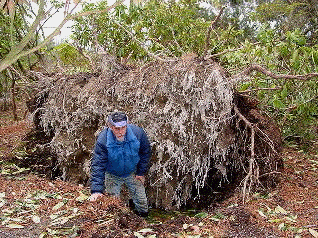

Introduction History Spring Tour Other Seasons Companion Plants Fruit/Veg/Herbs Work Family Links ARS DESIGN ELEMENTS SPECIMENS TIPS VISITING THE GARDEN GARDEN FURNITURE
More Windstorm--December 4, 2003 Windstorm Introduction Red Oak, Japanese Red Pine, and Honey Locust
| Pines usually lose a top or break along the trunk, but three of our four destroyed shore pines were uprooted by the wind. This one created a twenty-four inch hole with eighteen inches of water in it. The roots also lifted several large rhododendrons into the air. |
 |
 |
Doreen stands in the triple top of a large Shore Pine that tangled with a Beauty of Littleworth and won. Another took down a Sourwood tree with it. We also lost a Pinion Pine and two Japanese Red Pines. In addition, a Scotch Pine, a Japanese Black Pine, a Lodgepole Pine, and an Austrian Pine all tipped over, but I was able to right them with cables. |
Introduction History Spring Tour Other Seasons Companion Plants Fruit/Veg/Herbs Work Family Links ARS DESIGN ELEMENTS SPECIMENS TIPS VISITING THE GARDEN GARDEN FURNITURE
© 2001-2003 by John and Doreen Anderson